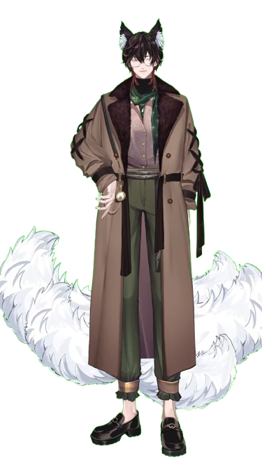
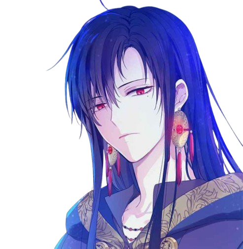
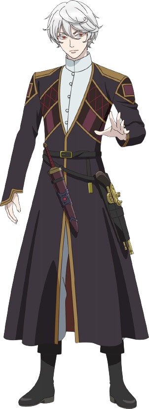
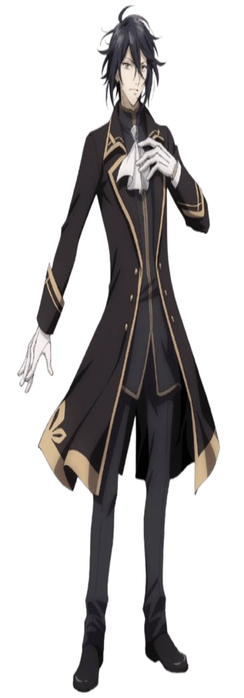
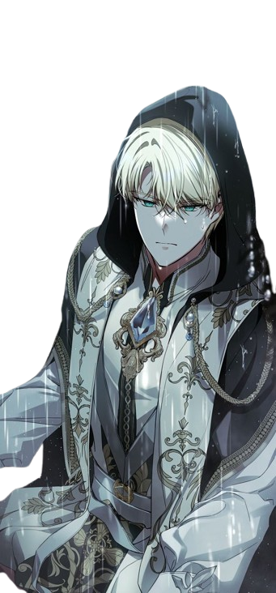
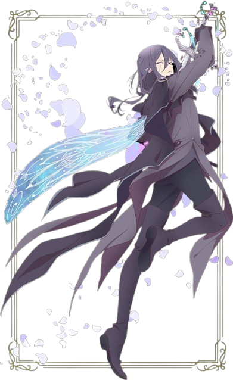
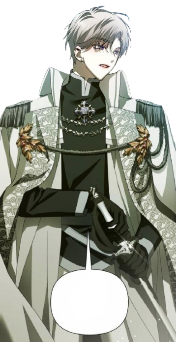
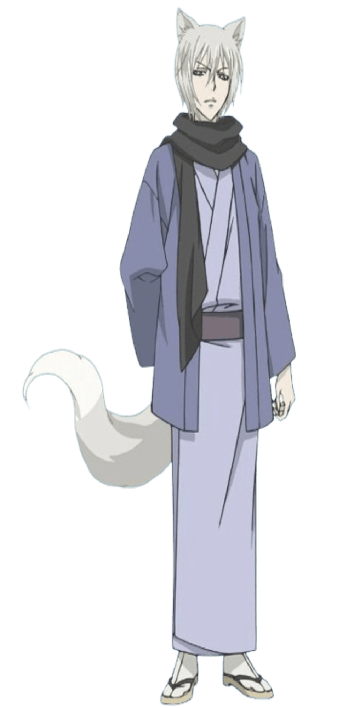

💻 Husbu Saya
Gingitsune Gehenna
Gingitsune Gehenna adalah seorang Vtuber asal Indonesia yang tergabung dalam agensi AKA Virtual. Karakter Gingitsune memiliki latar belakang sebagai roh rubah yang awalnya ditugaskan untuk menghibur manusia bekerja di bar, namun itu ternyata hanya mimpi belaka. Dalam kenyataannya, dia adalah manusia yang jatuh koma dan menjadi subjek eksperimen.
Lucas
Lucas adalah penyihir hebat dari Menara Hitam dalam manhwa Who Made Me a Princess. Dikenal karena kemampuannya mengubah wujud, ia awalnya mencoba membunuh Athanasia, namun akhirnya menjadi teman dekatnya dan penyihir kerajaan pribadi. Meskipun misterius dan penuh pesona, identitas masa lalunya masih menjadi teka-teki, yang menambah ketegangan dalam cerita.
Aoi Nanamori

Aoi Nanamori adalah karakter dalam anime Momochi-san Chi no Ayakashi Ouji. Ia adalah pemuda yang berubah menjadi Nue, dewa penjaga yang melindungi gerbang antara dunia manusia dan dunia roh setelah memecahkan segel rumah Momochi pada usia 10 tahun.
Duke Regis Floyen

Duke Regis Adri Floyen dari manhwa Father, I Don’t Want to Get Married! adalah seorang bangsawan yang dikenal dengan kepribadian dingin dan tegas. Meski tampak keras, Regis sangat mencintai putrinya, Jubelian, dan melihatnya sebagai alasan utama untuk tetap hidup. Namun, karena tekanan dari Kaisar, ia menjaga jarak demi melindungi putrinya dari bahaya. Sebagai ahli pedang yang hebat, Regis memegang prinsip bahwa kekuatan harus digunakan untuk melindungi, bukan menghancurkan.
Seto Galgada
Seto Galgada adalah pangeran tiran dari Kerajaan Galgada dalam seri Hoshifuru no Nina (atau dikenal juga sebagai Nina the Starry Bride). Sebagai tokoh yang kompleks, ia digambarkan memiliki kepribadian yang kuat dan sering terlihat mendominasi. Seto memainkan peran penting dalam cerita yang penuh intrik politik dan emosional di kerajaan tersebut, sering kali memengaruhi jalannya takdir Nina.
Hades Theos Rave
Hades Theos Rave adalah karakter dari anime Yarinaoshi Reijou wa Ryuutei Heika wo Kouryakuchuu. Ia adalah Kaisar Naga yang dikenal memiliki kekuatan besar dan takdir gelap yang berujung pada kekejaman di masa depan. Namun, pada saat cerita berlangsung, Hades digambarkan sebagai sosok baik hati meskipun dikelilingi oleh kesulitan.
Escal Van Dyke
Dari karakter inilah nama saya berasal,Escal Van Dyke, dikenal sebagai "Crazy Marquess," adalah tokoh utama dalam Taming the Marquess. Dia terkenal karena kekuatan dan reputasinya yang menakutkan, namun memiliki sisi lembut yang hanya terlihat oleh Laranora Ardor, wanita yang mengubah hidupnya.
Challe fen Challe
Challe Fen Challe adalah salah satu karakter utama dalam anime Sugar Apple Fairy Tale. Dia adalah peri prajurit yang lahir dari obsidian, memiliki penampilan menawan dengan rambut hitam dan mata tajam. Sebagai peri dengan kemampuan bertarung yang tinggi, Challe sering bersikap sinis terhadap manusia akibat masa lalunya sebagai budak selama 70 tahun. Dia menjadi pelindung Anne Halford, meskipun hubungan mereka awalnya dipenuhi ketegangan dan ketidakpercayaan. Lambat laun, Challe menunjukkan empati dan kesetiaannya dalam melindungi Anne dari berbagai bahaya.
Marquis Helio Tropium
Marquis Helio Niccolo, juga dikenal sebagai Helio Tropium, adalah karakter utama dalam manhwa I Wanna Be U [Your Throne]. Dia adalah teman masa kecil Lady Medeia Solon dan pewaris House of Niccolo. Setelah kehilangan orang tuanya dalam kecelakaan saat masih kecil, Helio mengalami masa sulit sebelum Medeia menyelamatkannya. Dia dikenal sebagai prajurit terkuat di kekaisaran dan memiliki loyalitas tak tergoyahkan terhadap Medeia, bahkan bersedia mengorbankan nyawanya demi dia.
Tomoe
Tomoe adalah karakter utama dalam anime Kamisama Hajimemashita. Ia adalah familiar dari dewa tanah Mikage dan kemudian menjadi familiar dari Nanami Momozono. Tomoe adalah seorang yokai rubah yang berusia ratusan tahun, namun tampil muda, dengan penampilan fisik yang sangat menarik. Ia memiliki rambut perak putih dan mata ungu mirip rubah, serta ekor rubah yang besar dan berbulu lebat. Tomoe memiliki kekuatan luar biasa, termasuk kemampuan mengendalikan kitsunebi (api rubah) dan kemampuan berubah bentuk, serta keterampilan bertarung yang hebat.